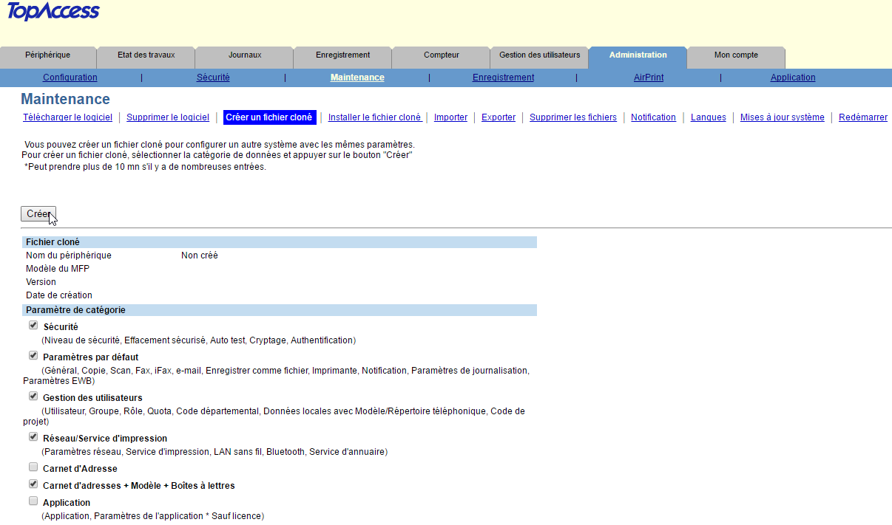
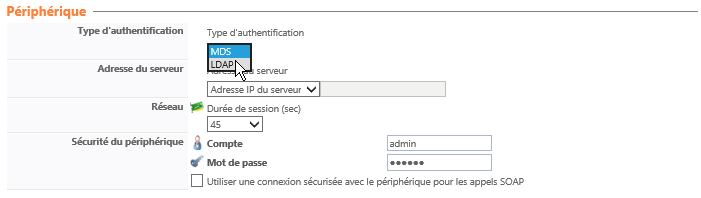
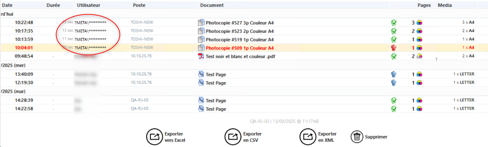
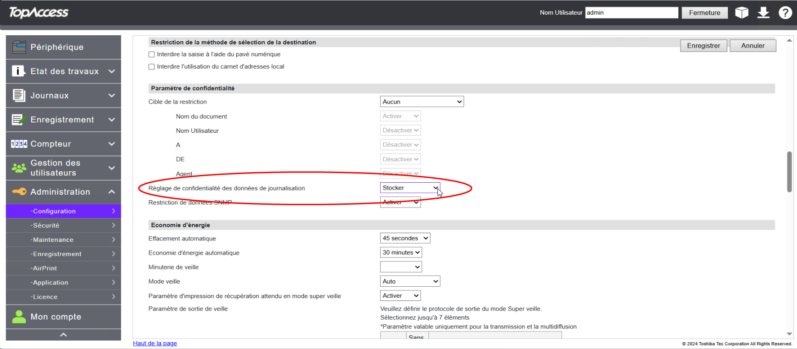

WES Toshiba - Prérequis et configuration préalable
Configurer les ports
Les ports réseau à ouvrir pour permettre le fonctionnement des WES sont les suivants :
| Source | Port | Protocole | Cible |
| Service Watchdoc | TCP 49629 TCP 49630 |
HTTP HTTPS |
Périphérique d'impression |
Configurer les périphériques
La configuration du WES Toshiba doit être précédée d'une configuration sur le périphérique depuis l'interface web d'administration de ce dernier.
Cloner les fichiers
Nous vous recommandons de cloner la configuration courante du périphérique en vue de rétablir la configuration initiale du périphérique en cas de besoin.
Pour cloner les fichiers, rendez-vous dans l'interface d'administration du périphérique suivante : Administration > Maintenance > Créer un fichier cloné et cliquez sur le bouton Créer :

Activer la fonction ODCA
Nous vous recommandons d'activer la fonction ODCA du périphérique Toshiba.
-
Rendez vous dans l'interface Administration > Configuration> ODCA >Section Réseau ;
-
dans la section Network, choisissez Activer port (Enable Port) :
Activer le mode Service
Ce paramétrage est obligatoire avant l'installation du WES. Seuls les techniciens Toshiba sont habilités à gérer ces paramètres : Doxense® ne fournit pas de documentation propre au périphérique Toshiba.
-
Mise à jour du lecteur de badges : si ce paramètre n'est pas activé, le lecteur de badge ne peut fonctionner. Les valeurs suivantes doivent être utilisées avec les lecteurs de badges fournis ou validés par Doxense®. Pour les autres lecteurs de badges, merci de contacter directement le Support Toshiba pour connaître les valeurs recommandées.
-
08-3500
- Valeur 60001: lecteur Elatec TWN3 ou TWN4 avec firmware standard ;
- Valeur 90001: lecteur Elatec avec firmware Toshiba.
-
-
Authentification avant impressions : ces paramètres doivent être définis pour permettre le mode Comptabilisation :
-
08-3642-0
-
Valeur 0 : active l'authentification avant l'impression.
-
-
08-3642-2
-
Valeur 1: active l'authentification avant l'impression pour le DPWS Scan. A activer obligatoirement pour les périphériques de numérisation fonctionnant avec le mode MDS (Managed Document Service)
-
-
-
Paramètres quota : ces paramètres doivent être définis pour activer les Quotas sur Watchdoc, mais peuvent être ignorés si vous n'utilisez pas les quotas.
-
08-9787
-
Valeur 0 : l'exécution des impressiond est automatiquement arrêtée quand le quota est atteint (paramétrage recommandé) ;
-
Valeur 1: l'exécution des impressions se poursuit même lorsque le quota est atteint et génère alors un quota négatif.
-
- 08-6084
- Valeur 1: quota sur les impressions. Seul mode supporté par Watchdoc.
-
Paramétrer le mode LDAP en Legacy mode
Dans le cas où votre périphérique Toshiba ne supporte pas le mode d'authentification MDS, vous pouvez utiliser le mode d'authentification LDAP traditionnel.
Le mode d'authentification LDAP n'est pas compatible avec la fonction Quotas Crédit d'unités de valeurs dédié à l'impression et attribué à un utilisateur ou à un groupe d'utilisateurs. de Watchdoc.
Crédit d'unités de valeurs dédié à l'impression et attribué à un utilisateur ou à un groupe d'utilisateurs. de Watchdoc.
Pour installer le mode LDAP, vous devez intervenir dans l'interface d'administration du périphérique ainsi que dans le profil WES.
Paramétrer le mode LDAP dans EWB
-
Service Mode > EWB Priority : dans le menu 8-9132, saisissez la valeur 99.
Il s'agit d'un paramétrage avancé nécessitant une bonne connaissance de EWB (Embedded Web Browser). Dans le cas où vous n'êtes pas habilité à modifier ce paramètre, contactez votre référent Toshiba®.
Paramétrer le mode LDAP dans le profil WES
-
Dans l'interface web d'administration de Watchdoc , accédez au profil WES Toshiba (depuis le Menu principal > Section Configuration > Web&Wes > Editer le WES Toshiba) ;
-
Dans la section Périphérique , paramètre Type d'authentification, sélectionnez le mode LDAP.

Configurer les paramètres de confidentialité
Pour obtenir des informations précises relatives aux utilisateurs dans l'historique des impressions de Watchdoc, il est nécessaire de configurer les paramètres de confidentialité sur le périphérique d'impression.
Autrement, dans l'historique des impressions et des numérisations, les informations relatives aux utilisateurs risquent d'êtres masquées, remplacées par des étoiles (?\META\**********) ou la valeur Anonymous :

Pour configurer le paramètre de confidentialité, appliquez les étapes suivantes.
-
Accédez à l'interface de configuration du périphérique en tant qu'administrateur.
-
Cliquez sur l'entrée de menu Administration > Général.
-
Dans la section Paramètre de confidentialité, pour le paramètre Réglage de confidentialité des données de journalisation, sélectionnez "Stocker" :

-
Cliquez sur Enregistrer pour valider ce paramétrage.